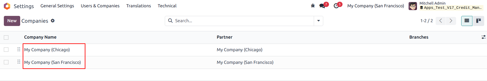

Credit Management
Description
This module is configured to apply credit limits to customers and allows
customers
to be placed on a credit hold if the customer should be restricted from placing any new orders
or receiving
any additional orders.
Configuration
Access Rights
- On user “Manage Credit Limit”, will
give users
the access rights to edit the credit management field on the contact.
- Access rights do not restrict the “Override Credit
Limit” field on sales order.
- Upon install all customers will have a credit limit of
zero. When
the credit limit is “zero” there is no credit limit assigned to that
contact.
- Credit Management field can be set on any parent contact
through
the “Sales & Purchase” tab.
- Add Prepayment Test set under Settings - - >
Sales - -
> Quotations & Orders
Enable "Add Prepayment Test" to test even if the credit limit
is
equal to 0.
- No. Of Overdue Days set under Settings - - >
Accounting
- - > Customer Payments
- Allow DO Check Availability even If Hold Delivery
Till is
selected set under Settings - - > Sales - - > Quotations & Orders
Credit Management Fields
Functionality
Credit Management on Sales Orders
1. Credit Limit
- This will restrict confirmation of any SO that is over
the
value entered in this field or restrict confirmation of a combination of SO over this
value if invoice
has not been paid.
Note: if the credit limit is “0” on the customer contact, no credit
limit will be assigned to this contact.
Credit Limit is set for the newly added contact under Sales & Purchase
Tab.
If Credit limit = $100
- Sales order will not confirm if total value of sale
is
greater than $100.
While confirming the Sale Order, “Credit Limit Warning” appears as
there
is Over Credit Limit for the contact.
The Sale order can be overridden by checking the boolean “Override Credit
Limit” true and confirm the sale order.
Tracking use of “Over Credit”
On the list view of all Sale orders, column named “Over Credit” will
be
marked true if the credit was overridden.
2. Total Credit
Used
The Total Credit Used is a computed field and is calculated based on the
below
cases,
- Confirmed sales orders
- Sales orders with items partially or completely
delivered
- Sales orders with Draft invoice(s)
- Sales orders with posted and not paid invoice(s)
3. Credit hold
- If Credit Hold field is enabled in the
Contact.
- While choosing the customer in a sales order,
“Credit Limit Warning” appears. The user will not be able to confirm any new
sales orders
for any amount.
- This can not be overridden. Only way to confirm the
sales order
is to remove the credit hold on the customer.
On Delivery Order
- The user will not be able to process the any open
Delivery
orders for this customer while on credit hold.
- “User Error” appears as The customer is on
Credit
hold.
4. Has Overdue Invoices
- This will be marked true automatically when invoice(s)
have not
been paid by the due date based on the no. of days entered in the field “No. Of
Overdue
Days” set under Settings.
- This will not effect confirming future Sales
orders.
5. Override Credit Threshold
- Any Sales order that is below the “override
Credit
Threshold” can be confirmed even when the credit limit has been hit. If this field
is zero no
threshold will exist.
- For example, if our credit limit is 100 and the
threshold is
40.
We have $110 on credit currently and want to place another Sales order for $35
dollars.
The threshold will allow this Sales order to be confirmed.
6. Hold Delivery Till Payment
- This field can be set on the contact or on the
Sales
order.
- If boolean is true on the contact, boolean will be
maked
true on all sales orders then propagated to the Delivery order.
- If the boolean is marked true on the Sales order
it is
only true for that sales order and delivery order.
- If the boolean is marked false, then it allows to
process
the delivery order.
- If payment is processed then the boolean on the DO is
automatically updated as False. User allowed to process the DO once the boolean is
false.
7. Allow DO Check Availability even If Hold Delivery Till is selected
- When enabled, it will allow check availability for all
the
transfers including transfers with hold delivery till payment and credit hold boolean
enabled.
We can see two transfers in waiting status with one transfer with Hold Delivery
enabled.
After enabling the “Allow DO Check Availability even if Hold Delivery Till
is
selected”, select the transfers and click on “Check Availability” where even
the transfer
with Hold Delivery enabled will be moved to Ready status.
When disabled, check availability will not happen by any sources such as
Scheduled
Action, Confirming the sale order and manually clicking on Check Availability.
8. Credit Management on Multi-Companies
- For Multi-Companies, there’s a field created
under
General Information tab of the company “Is Partner Credit” which creates
Partner Credit
Limit when enabled.

Credits
Contributors
This module is maintained by Sodexis.